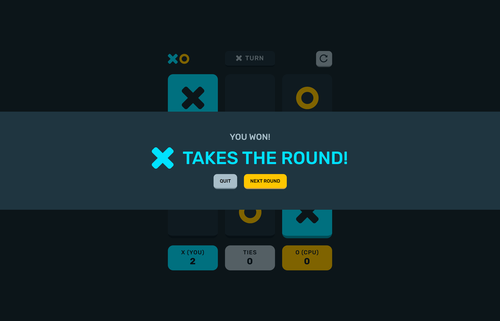
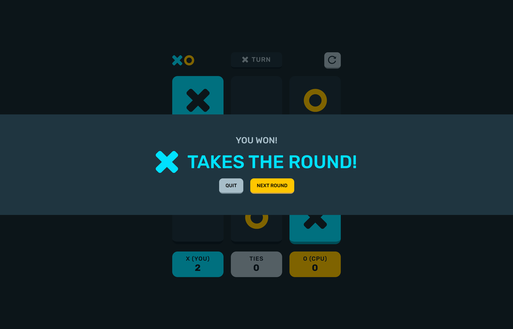
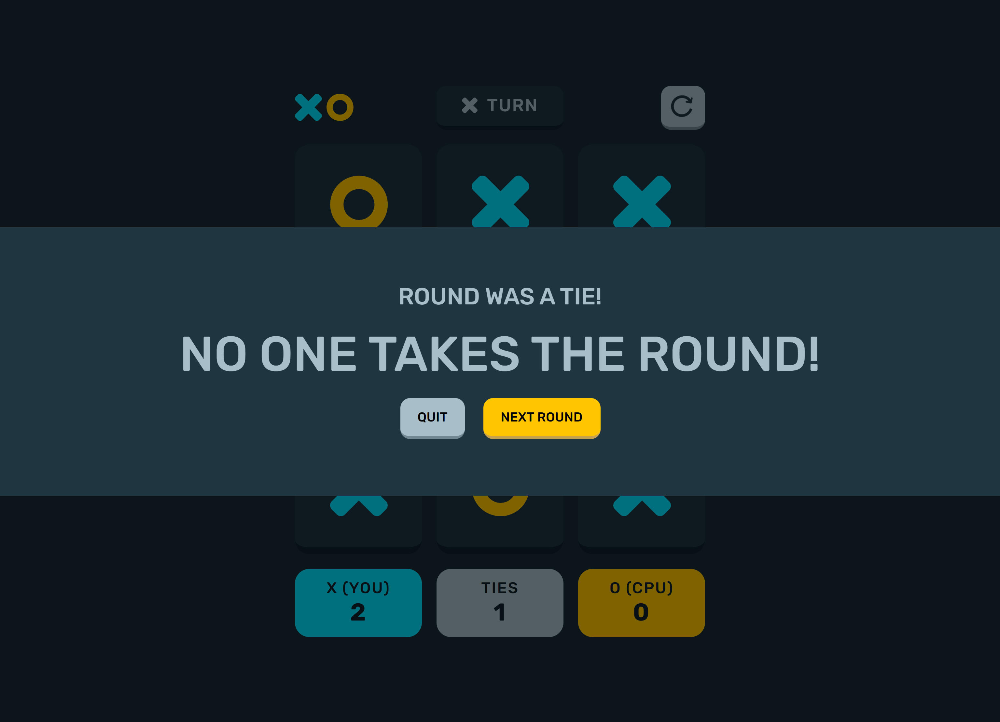
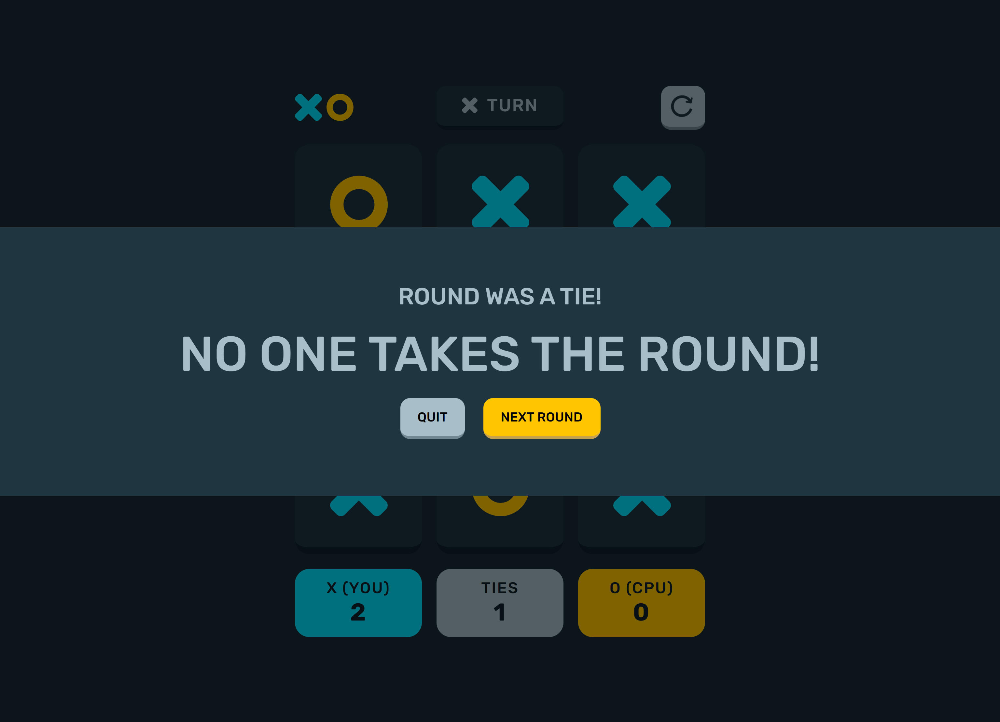

Tic Tac Toe Game (CSI3140)
By Jordan Na and Jas Dhindsa
Project Description
A tic tac toe game a user can play against the CPU. Built with vanilla JS, HTML, and CSS. Has fluid animations and is responsive, works on different screen sizes
How to Play the Game
Click the button below to play the game.
Features
- View the optimal layout for the game depending on their device's screen size
- Play tic tac toe against the computer
- Maintain the game's score state after refreshing the browser
- Reset the score/board
Rules
The rules of this tic tac toe game are simple. The user is presented with an empty 3 by 3 grid. The user will click on a cell in a grid to place an "X", attempting to get 3 cells with an "X" to match (horizontally, vertically, diagonally). Each time the user places an "X", the computer opponent will place an "O", also trying to get 3 in a row. Whoever gets 3 in a row first wins. If neither the player or computer opponent gets 3 in a row, the round is a draw. Winning a round gets you a point.
Project Images
 


 

Technical Outline
Design of the System
The design of the system can be grouped into the following components:
- UI
- Design of the header
- Design of the grid
- Design of the scoreboard
- JavaScript and logic
- Filling in a cell
- Computer turn
- Checking for winner
- Scoreboard
- Reset
UI
Design of the main containerThe main container is made of a main element. It uses CSS grid to orient the layout to allow the subcomponents to situate themselves inside.
- display: grid: This makes the element a grid container, enabling the use of CSS Grid Layout for its child elements.
- grid-template-columns repeat(3, 170px): This defines three columns in the grid, each 170 pixels wide.
- grid-template-rows 45px repeat(3, 170px) 80px: This defines the rows in the grid. The first row is 45 pixels tall, followed by three rows each 170 pixels tall, and a final row 80 pixels tall.
- row-gap 20px: This sets a 20-pixel gap between each row in the grid.
- column-gap 20px: This sets a 20-pixel gap between each column in the grid.
- align-items stretch: This makes the items within the grid stretch to fill the entire height of their grid area.
Design of the header
The header is made of 3 parts:
- Logo
- An img element that has a src property of the logo svg file
- Turn indicator
- A div that has an img for the icon corresponding to the current turn, and a span containing the text "turn"
- JavaScript is used to update the src property of the img to either an "x" or "o" depending on whos turn it is
- Reset button
- A button with an img inside of it that is an svg icon
- Has an event listener for click events to reset the grid
Design of the grid
The grid is nothing more than a series of divs. Due to the nature of the grid layout of the parent element, the main container, the cells naturally form a grid. Each cell in the grid has a border bottom property to display a shadow like appearance for a more 3d effect. Each cell in the grid can have a css class that will add an "x" or "o" icon as well as disable pointer events.
Design of the scoreboard
The scoreboard consists of 3 divs, each with their own color to make them distinctly represent the different score counts. Each div has a child span whos text is updated to display the score.
Design of the banner
The banner, also known as the game result container, displays the result of the game. The toggleGameResult function in tic-tac-toes.mjs gets called to then toggle classes on the elemnts representing the game result banner. These css classes cuase an animation occurr to bring the game result banner into view.
JavaScript and Logic
Filling in a cellWhen a player fills in a cell, they do so by triggering a click event on any one of the cells in the grid. One of two thing can happen:
- The cell is occupied, meaning it has either an x or o in it
- In this case, the css property "pointer-events" will be set to "none", disallowing the user to trigger a click event on the cell
- The cell is empty
- In this case, the cell has the css class added to either display an "x" or "o" (depending on the player's turn)
- A count of the number of total filled cells in the grid is incremented
- A count of the player's filled cells on the current row and column is incremented
- Each player, both the user --and the cpu have an array "rows" and "columns" where rows[i] and columns[i] represent the number of "x"s and "o"s, respectively (0 <= i <= 3)
All of these pieces of information will be used to determine the game result.
Computer turn
- After the player fills in a cell and has their turn, the entire program waits 1.5 seconds (using async/await) to simulate the computer thinking.
- The computer then fills in a cell with the exact same mechanism as the user filling a cell.
- During the computer's turn, pointer events on the grid are disabled for the user.
Checking for game result
The game can either end in the user winning, the computer winning, or the round ending in a draw:
- User winning:
- Each time the user places a cell, the number of filled cells across the current row, the current column, and both diagonals are checked to see if they equal 3 (which then indicates 3 in a row).
- If it does equal 3, the winning cells are highlighted and then the win banner appears.
- Computer winning:
- The mechanism is the same as the user winning.
- Draw:
- When a draw occurs, the variable that keeps track of the number of filled cells is found to be equal to the total number of cells.
- In this case, it is then known that all cells are full and no 3 in a row has been found.
- The draw banner appears.
Scoreboard
- The scoreboard has 3 variables: The player score, the number of ties, and the computer score.
- These values are incremented depending on the game result.
- By using the local storage, the game scores can be stored on the local machine to be able to persist between different sessions of running the application.
Reset
- The game reset feature is used to clear the board and reset all variables to their default initial values.
- This includes:
- Removing all classes from the cells that pertain to the filled in symbol (x or o).
- Setting the number of filled in cells to 0.
- Setting the number of filled in player cells and computer cells across all rows and columns to 0.
- Setting the player score, number of ties, computer score to 0 (and subsequently the corresponding local storage values to 0).
Trivia Quiz Project
By Jordan Na
UI Demo

Project Description
This project is a trivia quiz application that allows users to test their knowledge on a variety of topics. The application is built using HTML, CSS, and JavaScript. The application also features a timer that counts down as the user answers questions. The application also features a score counter that keeps track of the user's score as they answer questions. The application also features a results page that displays the user's final score and allows them to restart the quiz.
Technologies Used
- HTML
- CSS
- JavaScript
Game Modes
- Classic: Answer 10 trivia questions from any category of your choice! Perfect for a casual game to test your trivia knowledge stress free.
- Countdown: You have 60 seconds to answer as many questions as possible. Questions answered correctly will add 5 seconds to the time remaining. Incorrect answers will do nothing. Tick Tock !!!
- Adventure: Go on a quiz adventure and get through 100 levels of trivia fun. Levels vary in category and diffuculty. The further you go, the more difficult the questions get !
Project Images